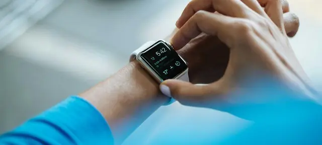
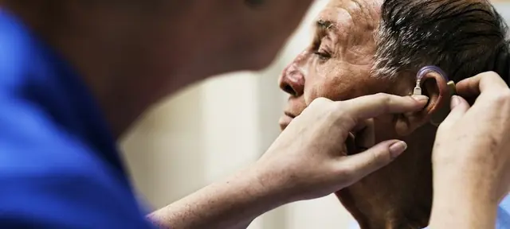
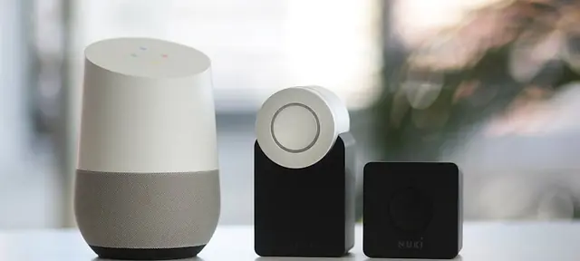
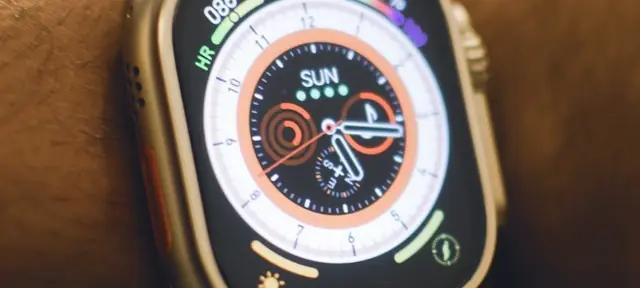
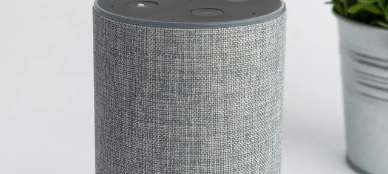
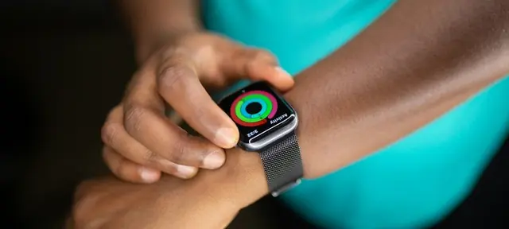
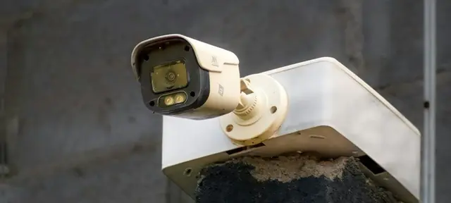
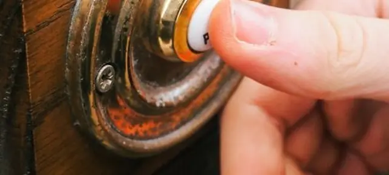
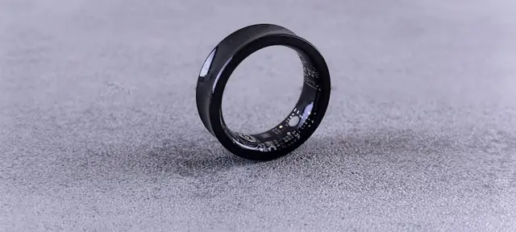

All Guides & Reviews
Every TechForDad guide is researched from manufacturer specs, published reviews and current prices. No sponsored rankings, ever.

Best Medical Alert Systems of 2026: Reviewed & Ranked
We compared 5 medical alert systems so you don't have to. Here are the top picks for every budget and lifestyle.
Read full guide
Best Cell Phones for Seniors in 2026: Simple & Easy to Use
From big-button flip phones to senior-friendly smartphones, we break down the best options for every tech comfort level.
Read full guide
Best Tablets for Seniors in 2026: Easy to See & Simple to Use
The right tablet can keep seniors entertained, connected with family, and mentally active. Here are our top picks.
Read full guideBest GPS Trackers for Elderly Parents in 2026: Reviewed & Ranked
From dementia wandering to vehicle tracking: we compared 5 GPS trackers for different senior situations.
Read full guide
Best Blood Pressure Monitors for Seniors in 2026: Compared & Ranked
Ranked by accuracy, ease of use, and AFib detection. Top picks from $35 to $99.
Read full guideLife Alert vs Medical Guardian 2026: Which Is Actually Better?
Response times, monthly costs, contracts, and fall detection compared side by side. One clear winner.
See comparison
Medical Alert Without Monthly Fee 2026: The Honest Guide
The truth about no-monthly-fee medical alerts, plus the lowest-cost monitored options in 2026. Apple Watch SE vs monitored systems.
Read full guide
How to Set Up an iPad for an Elderly Parent, Complete 2026 Guide
Step-by-step: accessibility settings, FaceTime setup, simplified home screen, Siri, and how to print a cheat sheet that actually works.
Read full guideJitterbug vs iPhone for Seniors 2026: Which Is Better?
Jitterbug Flip3, Smart5, and iPhone 17e compared for seniors. Here's which phone wins for different situations.
See comparison
Best Hearing Aids for Seniors 2026: OTC Options Compared
ELEHEAR Beyond Pro vs Jabra Enhance vs Lexie B2: ranked by sound quality, ease of use, and value from $249.
Read full guide
Best Smart Home Devices for Seniors 2026: Compared & Ranked
Amazon Echo Show, Ring doorbell, smart lights. We ranked 7 smart home devices by how much they actually help elderly parents stay safe.
Read full guide
Best Smartwatches for Seniors 2026: Fall Detection, ECG & Easy to Use
Apple Watch vs Samsung Galaxy Watch vs dedicated medical alert watches. We explain which one is right for your parent's situation and budget.
Read full guideBest Cordless Phones for Seniors 2026: Big Buttons & Loud Volume
We compared 5 amplified cordless phones for seniors: photo speed dial, 50dB boost, and extra-loud ringers for anyone with hearing loss.
Read full guideBest E-Readers for Seniors 2026: Large Print, No Eye Strain
Kindle Paperwhite vs Kobo Libra vs the budget Kindle: we rank the 5 best e-readers for seniors by font flexibility, eye comfort, and arthritis-friendly design.
Read full guideBest Pill Organizers with Reminders for Seniors 2026: Reviewed & Ranked
Hero vs LiveFine vs MedMinder: we ranked 5 automatic pill dispensers by ease of use, caregiver alerts, and whether they actually prevent missed doses.
Read full guideBest TV Remotes for Seniors 2026: Big Buttons & Simple Design
Flipper Big Button, GE BigEZ OneTouch, and SMPL ranked. We pick the 5 best large-button remotes for seniors by simplicity, backlight, and ease of setup.
Read full guide
Best Alexa Devices for Seniors 2026: Reviewed & Ranked
Echo Show 11, Echo Show 8, Echo Dot, and more. We rank the 5 best Amazon Echo devices for elderly parents by ease of use, screen size, and senior-friendly features.
Read full guideBest Medical Alert Systems in Canada 2026: Reviewed & Ranked
MedicAlert, Telus LivingWell, Lifeline, and more, compared with Canadian pricing in CAD and provincial subsidy information.
Read full guide
Best Senior Cell Phone Plans in Canada 2026
Telus and Rogers programs for seniors on the GIS, Chatr and Lucky Mobile from $21, and Rogers 65+ plans, with prices checked on carrier pages.
Read full guide
Best Cell Phones for Seniors in Canada 2026: Reviewed & Ranked
iPhone, Samsung Galaxy, Doro, and the best carrier plans from Telus, Rogers, Bell & Koodo, all with CAD pricing and tips on GIS senior discounts.
Read full guide
Best Blood Pressure Monitors in Canada 2026: Reviewed & Ranked
Omron, A&D Medical, Withings: compared with CAD prices, Hypertension Canada validation status, and where to buy across Canada.
Read full guide
Best Tablets for Seniors in Canada 2026: Reviewed & Ranked
iPad, Samsung Galaxy Tab, and Amazon Fire HD compared with CAD prices, Canadian retailer availability, and tips on accessibility features for aging parents.
Read full guideBest Hearing Aids in Canada 2026: Reviewed & Ranked
Phonak, ReSound, Oticon, and Costco Canada compared with CAD prices, a province-by-province subsidy guide, and the new OTC hearing aid options in Canada.
Read full guide
Best Smartwatches for Seniors in Canada 2026: Reviewed & Ranked
Apple Watch, Samsung Galaxy Watch, Garmin, and Lifeline compared with CAD prices, fall detection ratings, and Canadian carrier plans for aging parents.
Read full guideBest GPS Trackers for Seniors in Canada 2026: Reviewed & Ranked
Lifeline On the Go, Lil Tracker, AngelSense, and Tracki compared with CAD prices, Canadian cellular coverage, and which is best for seniors with dementia.
Read full guide
Best Home Security Systems for Seniors in Canada 2026: Reviewed & Ranked
Telus SmartHome, Ring, Abode, and Rogers compared with CAD prices, no-contract options, insurance discount tips, and which systems work best for elderly parents living alone.
Read full guide
Best E-Readers for Seniors in Canada 2026: Reviewed & Ranked
Kobo vs Kindle compared with CAD prices: plus why Kobo lets Canadian seniors borrow free library ebooks that Kindle cannot access in Canada.
Read full guide
Best Video Doorbells for Seniors in Canada 2026: Reviewed & Ranked
Ring, Google Nest, Eufy & Arlo compared with CAD prices, plus senior-friendly setup tips and how to screen door visitors without opening the door.
Read full guideBest Cordless Phones for Seniors in Canada 2026: Reviewed & Ranked
VTech, Panasonic & Clarity amplified cordless phones compared with CAD prices from Amazon.ca, London Drugs & Best Buy for seniors with hearing loss.
Read full guide
Best Sleep Trackers for Seniors 2026: Reviewed & Ranked
Withings, OZI Sleep, Garmin, Oura, and Samsung compared, including no-wearable options and caregiver bed-exit alerts for aging parents.
Read full guideBest Home Security Systems for Seniors 2026: Reviewed & Ranked
SimpliSafe, Ring Alarm, ADT, Vivint, and Cove compared for elderly parents living alone: pricing, contract terms, and senior-friendly features.
Read full guide